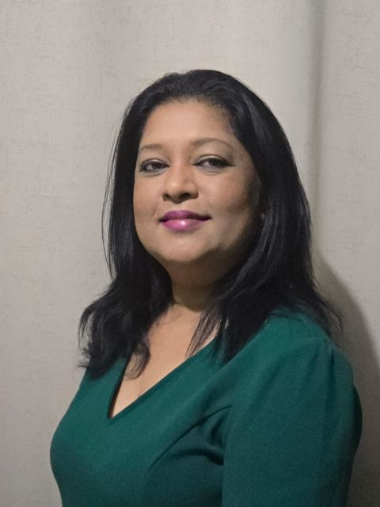

Post Graduate Diploma in Education
Becoming a reflective, learner-centred teacher.
Welcome to the Post Graduate Diploma in Education portfolio of Beena Seepersad Vishnu, an Information Technology teacher in Trinidad and Tobago.

About this portfolio
I am an Information Technology teacher at Waterloo Secondary School in Trinidad and Tobago. I am currently enrolled in the Post Graduate Diploma in Education programme in the Faculty of Humanities and Education at the University of the West Indies (2026). This portfolio was created as part of the requirement for the Pedagogy as Process course, and it documents how I plan lessons and units, choose assessment strategies, integrate technology and connect Information Technology with other subjects and real-life situations.
Read my purpose statement · My teaching philosophy · Technology integration
Portfolio contents

A - Introduction
My purpose, my story and my initial teaching philosophy.

B - Unit and Lesson Planning
Unit plans and lesson plans.

C - Technology Integration
Integrating technology into teaching: an Output Devices lesson with its planning sheet, slides, starter video and classroom photographs.
D - Growth in Assessment Component
Growth in assessment practice.

E - Transformations
Curriculum integration and becoming a change agent, with the related lesson plan, audio recording, video and photograph.

F - Reflective Summary
A reflection on the Post Graduate Diploma in Education programme.